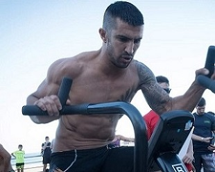
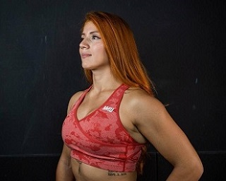
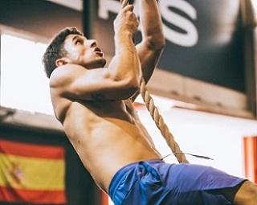
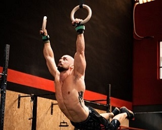

Jesús Massarwah
Mi pasión por el deporte viene del karate, que practiqué y competí desde niño. Estudié ciencias del deporte y me especialicé en crosstraining, un deporte que me encanta por su variedad e intensidad. Como entrenador, quiero que aprendáis, disfrutéis y os superéis con este deporte. Estoy aquí para motivaros, corregiros y apoyaros. Espero que os guste este box y que os sintáis como en casa.
Angie Sierra
Doy miedo pero soy maja.
Ramón Domenech
Apasionado del deporte y del entrenamiento. Desde que descubrí esta disciplina he dedicado mi vida a conocerla, entrenarla y ahora transmitirla. Todos los días son buenos para aprender ese pequeño detalle que te haga crecer como atleta.
Adrián Román
Llevo desde 2016 enganchado al crosstraining y ya es parte de mi vida. Disfruto mucho del proceso, tanto a la hora de entrenar y ponerme a prueba como a la hora de ayudar a otros a aprender, perfeccionar sus técnicas y que consigan llegar a hacer cosas que veían como imposibles. Así que si quieres ver de qué eres capaz, te espero en RaionHato donde la combi completa está garantizada: diversión, superación personal, entreno en grupo y una buena sudada.